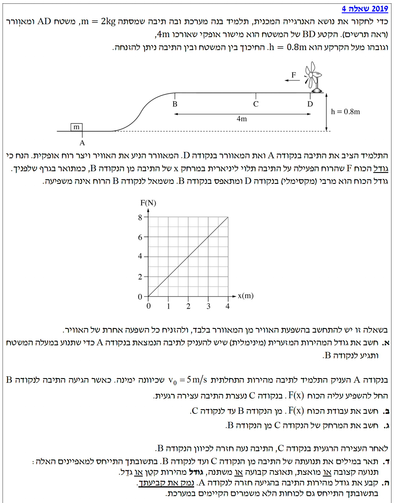

פתרון בגרות מודרך בפיזיקה
מכניקה (5 יח"ל) - עבודה ואנרגיה
פתרון מודרך, צעד-אחר-צעד הכולל הסברים מלאים לתלמיד
עודכן:
--- --:--:--
מבט כללי על השאלה
שלום תלמידים! לפנינו שאלת בגרות מרתקת המשלבת את חוקי שימור האנרגיה, עבודת כוח משתנה ודינמיקה.
בפתרון זה נפרק את השאלה לשלבים, נבצע המרות יחידות MKS במידת הצורך, ונראה כיצד לנתח את העבודה של כוח הרוח באמצעות גרף.
בואו נבין יחד את הפיזיקה שמאחוריה צעד אחר צעד.

[תמונת השאלה המקורית]
לא נמצאה תמונה בשם question-image.png באותה תיקייה.
מה נתון:
- מסת התיבה: \( m = 2 \text{ kg} \) (כבר ביחידות MKS).
- גובה הנקודה A: נקבע את המפלס התחתון כייחוס, לכן \( h_A = 0 \text{ m} \).
- גובה הנקודה B: נתון בשאלה כי \( h_B = 0.8 \text{ m} \) (כבר ב-MKS).
- תאוצת הכובד: נגדיר כיוון ציר אנכי \( y \) כלפי מעלה. גודל התאוצה הוא \( g = 10 \text{ m/s}^2 \).
- השפעת הרוח מבוטלת בסעיף זה, ונתון כי אין חיכוך (\( W_{nc} = 0 \)).
מה מחפשים:
אנו נדרשים למצוא את גודל המהירות המינימלית בנקודה A (נסמן: \( v_A \)).
שימו לב: המהירות בנקודה B אינה נתונה במפורש, אך הביטוי "מהירות מינימלית" הוא רמז קריטי. כדי למצוא את המהירות ההתחלתית ה"מינימלית" הנדרשת כדי להגיע לנקודה B, אנו מניחים שהתיבה מגיעה לשם בקושי רב. אם לתיבה הייתה נשארת מהירות כלשהי בנקודה B, המשמעות היא שהיה לה עודף של אנרגיה קינטית, ושיכולנו להתחיל את התנועה בנקודה A עם מהירות קצת יותר נמוכה. לכן, כדי לחשב את סף המינימום, עלינו לדרוש כי התיבה מאבדת את כל מהירותה בטיפוס ונעצרת בדיוק בנקודה B, כלומר \( v_B = 0 \).
נוסחאות ועקרונות בשימוש:
נשתמש בחוק שימור אנרגיה מכנית.
\( E_k = \frac{1}{2}mv^2 \)
\( U_g = mgh \)
\( E_A = E_B \)
פתרון צעד-אחר-צעד:
נרשום את משוואת שימור האנרגיה בין הנקודות A ו-B:
\[ E_A = E_B \]
\[ E_{k,A} + U_{g,A} = E_{k,B} + U_{g,B} \]
\[ \frac{1}{2}mv_A^2 + mgh_A = \frac{1}{2}mv_B^2 + mgh_B \]
נציב את הנתונים שלנו (\(h_A=0\) וגם \(v_B=0\)):
\[ \frac{1}{2} \cdot 2 \cdot v_A^2 + 0 = 0 + 2 \cdot 10 \cdot 0.8 \]
\[ v_A^2 = 16 \]
\[ v_A = \sqrt{16} = 4 \text{ m/s} \]
המהירות המינימלית שיש להעניק לתיבה היא: \( v_A = 4 \text{ m/s} \)
💡 טיפ מורה:
תמיד חפשו בשאלות בגרות את מילות המפתח: "מינימלי", "מקסימלי", "בקושי" או "על סף". מילים אלו כמעט תמיד מתורגמות לתנאי מתמטי של איפוס. כאן, "מהירות מינימלית" מתורגמת מיד לאיפוס המהירות הסופית: \( v_B = 0 \). באותו אופן, אילו ביקשו לחשב את "הגובה המקסימלי", היינו מסיקים שמהירות השיא בפסגה היא אפס!
מה נתון:
- כעת, המהירות ההתחלתית היא: \( v_A = 5 \text{ m/s} \).
- כאשר התיבה מגיעה לנקודה B, כוח הרוח \( F(x) \) מתחיל לפעול עליה שמאלה, נגד כיוון התנועה ימינה.
- התיבה נעצרת רגעית בנקודה C, כלומר מהירותה שם אפס: \( v_C = 0 \).
- גובה המשטח BD הוא אחיד, לכן \( h_B = h_C = 0.8 \text{ m} \).
מה מחפשים:
את העבודה שמבצע הכוח \( F(x) \) (כוח הרוח) מהנקודה B ועד הנקודה C (נסמן: \( W_F \)).
נוסחאות ועקרונות בשימוש:
נשתמש במשפט עבודה-אנרגיה מוכלל.
\( W_{nc} = \Delta E = E_{\text{final}} - E_{\text{initial}} \)
\( E = E_k + U_g \)
חישוב:
תחילה, נחשב את האנרגיה המכנית ההתחלתית בנקודה A:
\[ E_A = \frac{1}{2}mv_A^2 + mgh_A = \frac{1}{2}(2)(5^2) + 0 = 25 \text{ J} \]
כעת, נחשב את האנרגיה המכנית הסופית בנקודה C. התיבה במנוחה ובגובה 0.8 מטר:
\[ E_C = \frac{1}{2}mv_C^2 + mgh_C = 0 + 2 \cdot 10 \cdot 0.8 = 16 \text{ J} \]
לפי משפט העבודה-אנרגיה, עבודת כוח הרוח שווה להפרש האנרגיות בין C ל-A (מ-A ל-B לא הייתה עבודה של כוחות לא משמרים):
\[ W_F = E_C - E_A = 16 - 25 = -9 \text{ J} \]
עבודת כוח הרוח מהנקודה B לנקודה C היא: \( W_F = -9 \text{ J} \)
💡 טיפ מורה:
האם הגיוני שקיבלנו עבודה שלילית? בהחלט! כיוון תנועת התיבה (ההעתק) הוא ימינה, ואילו כוח הרוח פועל שמאלה. כאשר הזווית בין הכוח לכיוון התנועה היא \( 180^\circ \), העבודה היא שלילית - הכוח "שואב" אנרגיה מהמערכת.
מה נתון:
- מצאנו שעבודת הרוח מ-B ל-C היא \( W_F = -9 \text{ J} \).
- נתון גרף הכוח כתלות במרחק \( F(x) \). נשים לב שהגרף הוא קו ישר העובר בראשית \((0,0)\) ובנקודה \((4,8)\).
- מכאן, נוכל למצוא את פונקציית הכוח: שיפוע הגרף הוא \( \frac{8-0}{4-0} = 2 \text{ N/m} \). לכן הפונקציה היא \( F(x) = 2x \).
מה מחפשים:
את המרחק של נקודה C מהנקודה B (אותו נסמן ב-\( x_C \)).
נוסחאות ועקרונות בשימוש:
העבודה שווה לשטח הכלוא תחת גרף כוח-מקום.
\( W = \pm \text{Area under } F(x) \text{ graph} \)
\( \text{Area of Triangle} = \frac{\text{base} \cdot \text{height}}{2} \)
חישוב:
עבודת הכוח שלילית, ולכן גודל השטח תחת הגרף מ- $x=0$ ועד $x=x_C$ חייב להיות שווה לערך המוחלט של העבודה (9 ג'ול). נחשב את השטח של המשולש שנוצר בגרף:
\[ \text{Base} = x_C \]
\[ \text{Height} = F(x_C) = 2x_C \]
\[ \text{Area} = \frac{x_C \cdot 2x_C}{2} = x_C^2 \]
נשווה את השטח לגודל העבודה שחישבנו:
\[ x_C^2 = 9 \implies x_C = 3 \text{ m} \]
המרחק של הנקודה C מהנקודה B הוא: \( 3 \text{ m} \)
💡 טיפ מורה:
שגיאה נפוצה של תלמידים היא ניסיון להציב כוח ממוצע או את הכוח המקסימלי בנוסחה \( W = F \cdot \Delta x \). זכרו את כלל הברזל: ברגע שאתם רואים גרף שמייצג גודל פיזיקלי משתנה (כמו כוח), רוב הסיכויים שעליכם לחשב את השטח שמתחתיו או את השיפוע שלו!
מה נתון:
- התיבה נעצרה רגעית ב-C (\( x = 3 \text{ m} \)) ומתחילה לנוע שמאלה חזרה לכיוון B.
- במהלך התנועה שמאלה, פועל על התיבה כוח הרוח שכיוונו תמיד שמאלה וגודלו \( F(x) = 2x \).
מה מחפשים:
תיאור איכותי של התנועה מ-C ל-B: האם התאוצה קבועה/משתנה/אפס? האם גודל המהירות קטן או גדל?
נוסחאות ועקרונות בשימוש:
\( \Sigma \vec{F} = m\vec{a} \)
המחשה ותרשים כוחות:
פתרון מילולי מנומק:
על התיבה פועל שקול כוחות בציר האופקי המורכב רק מכוח הרוח שכיוונו שמאלה. התיבה נעה שמאלה מנקודה C חזרה ל-B.
- מכיוון שווקטור המהירות שמאלה ווקטור הכוח (ולכן גם וקטור התאוצה) פועלים שניהם יחד לאותו כיוון שמאלה, גודל המהירות של התיבה גדל.
- ככל שהתיבה נעה מ-C אל עבר B, המרחק \( x \) מנקודה B הולך וקטן.
- מתוך הגרף אנו רואים שכאשר \( x \) קטן, גודל הכוח \( F(x) \) קטן.
- לפי החוק השני של ניוטון \( a = \frac{F}{m} \), מכיוון שגודל הכוח קטן והמסה קבועה, גם גודל התאוצה הולך וקטן. לכן זוהי תנועה בתאוצה משתנה.
התיבה מבצעת תנועה בתאוצה משתנה (גודל התאוצה קטן), בה גודל המהירות הולך וגדל.
💡 טיפ מורה:
היזהרו מהמלכודת! תלמידים רבים חושבים שאם גודל התאוצה קטן, אז התיבה צריכה להאט. זה לא נכון! תאוצה קטנה פשוט אומרת שקצב הגדלת המהירות יורד, אך המהירות עדיין ממשיכה לגדול כי הכוח דוחף בכיוון התנועה. דמיינו שאתם לוחצים על דוושת הגז ברכב, אבל מחלישים את הלחיצה בהדרגה – הרכב עדיין מאיץ, רק פחות חזק.
מה נתון:
- התיבה חוזרת מ-C ל-B, ולאחר מכן מחליקה חזרה מטה לנקודה A.
- המסלול הוא בעצם תנועה הלוך ושוב מ-A ל-C ובחזרה ל-A.
מה מחפשים:
את גודל המהירות של התיבה כאשר היא מגיעה חזרה לנקודה A.
נוסחאות ועקרונות בשימוש:
נבחן את העבודה הכוללת לאורך המסלול הסגור.
\( W_{\text{total}} = \Sigma W_{nc} \)
\( E_{\text{start}} = E_{\text{end}} \)
פתרון ונימוק:
נחשב את עבודת כוח הרוח במהלך הדרך חזרה (מ-C ל-B):
- הכוח פועל שמאלה וההעתק שמאלה, ולכן עבודת הכוח בחזור היא חיובית.
- מכיוון שגודל הכוח תלוי רק במקום (\( F=2x \)), השטח תחת הגרף זהה לשטח בהלוך. לכן: \( W_{C \to B} = +9 \text{ J} \).
העבודה הכוללת שביצע כוח הרוח במסלול הלוך ושוב מ-B ל-C וחזרה ל-B היא:
\[ W_{\text{wind, total}} = W_{B \to C} + W_{C \to B} = -9 + 9 = 0 \text{ J} \]
מכיוון שכוח החיכוך אינו קיים, וכוח הנורמל לא מבצע עבודה, סך העבודה של הכוחות הלא-משמרים במסלול המלא מ-A ל-C ובחזרה ל-A הוא אפס.
מסקנה: במעגל שלם זה, האנרגיה המכנית הכוללת נשמרה במלואה! לכן, התיבה תחזור לנקודה A עם אותה אנרגיה מכנית התחלתית בדיוק שהייתה לה בתחילת סעיף ב', ולכן עם אותה המהירות.
גודל המהירות של התיבה בהגיעה חזרה לנקודה A הוא \( 5 \text{ m/s} \).
💡 טיפ מורה:
תגלית יפה: גילינו שכוח הרוח בבעיה זו, אשר תלוי אך ורק במיקום (\(F=2x\)), מתנהג בדיוק כמו כוח אלסטי של קפיץ, ולכן כל עבודה שהוא גורע מהתיבה בהלוך, הוא מחזיר לה במלואה בחזור.
אבל שימו לב למלכודת חשובה! אל תטעו לחשוב שמעתה כל כוח של רוח הוא "כוח משמר". בפתרון בעיות מכניקה בבגרות, שני הכוחות היחידים שניתן להניח מראש ובאופן גורף שהם כוחות משמרים הם כוח הכובד וכוח אלסטי של קפיץ. כוחות חיצוניים אחרים כמו התנגדות אוויר (רוח), חיכוך או כוח מנוע הם כמעט תמיד כוחות לא-משמרים. בבעיה הספציפית שלנו, התיאור המתמטי הייחודי של הכוח (\(F=2x\)) "אילץ" אותו להתנהג באופן זהה לקפיץ. זהו מקרה פרטי של השאלה הזו בלבד - אל תסיקו מכך כלל לבעיות אחרות!